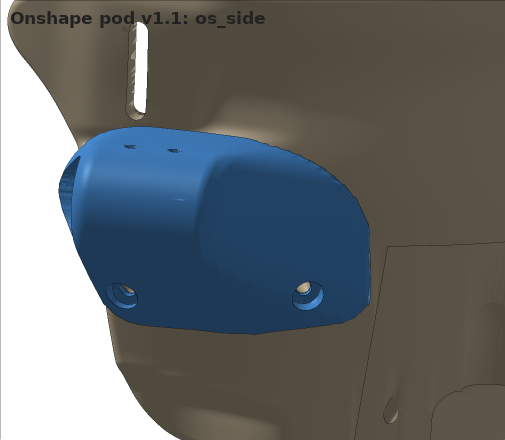
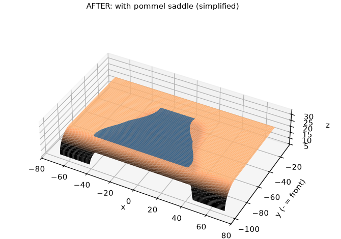

Side pad: how to hold the arm on the wing
Six ways to fix the side pad's arm to the chair's wing are compared here. Each one is shown here on the real chair (left side), with the kit on and with the kit off. A top-down cut of the wing shows how each one resists a child leaning on the pad. Each option also gets a strength line, an honest note on looks, and pros and cons. A comparison and a recommendation are at the end.
How to read the strength numbers. A child leaning on the pad (about 80 mm in front of the mount) twists the mount. The numbers are safety factors: 1 means the part is just at its limit, and the target is 3 at a 300 N lean and 2 at a 900 N knock. They are hand estimates by the CAD agent (viewer/review_r5/cad/mount_options.md), not test results. The 900 N figures are the 300 N corner values divided by 3.
All views use the chair's wing with the old mount removed. Options 1 and 3 use the round-5 build (the real Onshape parts). Option 2 is a mockup on the clean wing. Dropped: the slim saddle with 3 mm jaws, because its jaws bend (safety about 0.2 at 300 N).
Geometry: every view starts from the Onshape round-5 build (the wing STL repaired to a watertight solid). New openings, recesses, jaws and plugs are real booleans on it. Their rounded, flared rims come from fine local distance fields (0.2 mm voxels, smoothed) around each feature only; the rest of the wing is the exact mesh. Still approximate: the stays (path not yet checked against the arm rest's top contour); option 5's upper slot is shown with today's carrier, where a 0-drop arm would be used; option 6's arm is a sweep of the 22 × 31 section along a simple curve; the child proxies are cylinders and capsules from the measurement table.
Option 1 Tongue + support stay
What it is: the tongue mount as built (a solid 15.8 × 32.1 tongue, 24.5 deep, with a swell behind the cheek), plus a slim 20 × 30 mm post. The post runs from the underside of the depth piece's foot down to the arm rest top, fixed by 2 × M5 into inserts. It carries the pad's load straight into the arm rest, so the mount only has to locate the kit. Its length depends on the setting (40–120 mm): 2–3 lengths, or one sliding post with a pin. It sits under the pad on the parent's side, behind the pad from the child's side. It is clear of the strap slits, and well forward of the car wall (nothing behind the chair below z 260).
Looks: the mount stays slim: only the nose shows on the wing. The post is a second visible part under the pad, styled like the headrest pod (one soft body, flared ends). Kit off: the notch needs its blank cap, and two small inserts show on the arm rest top.
Strength (300 N lean / 300 N corner / 900 N): tongue ≈ 3–8 / similar with a short post; 900 N not estimated. The post itself: ≈ 2.2–6.7 (short post best).
- Keeps the slim tongue look on the wing.
- The strongest of the three with a short post: the load goes into the arm rest.
- The tenon stays the weak point for knocks that bypass the post.
- An extra part, in 2–3 lengths or adjustable.
- The arm rest has to change (2 inserts).
- A visible post under the pad.
- Not checked yet: the arm rest's top contour and the tilt feet.
Option 2 Thick saddle
What it is: a clip over the wing's edge, like a clothes peg on a board, gripping both faces. The jaws are 12 mm thick with tapered edges. The outer jaw is 100 mm tall and about 48 mm long. The child-side jaw is 69 mm tall and only 28 mm long, because strap slit S1 is in the way. It uses the same arm and a flush button on the outer jaw (the button is not drawn in this mock).
Looks: bulky. On a 20 mm blade, 12 mm jaws on both faces make the mount about twice the blade's thickness. It reads as a clamp, even rounded. Recessing helps little: 6 mm per side would leave 8 mm of blade. Kit off: the best of the three, because the front edge is intact and only a small rounded catch notch shows.
Strength (300 N lean / 300 N corner / 900 N): ≈ 5.0 / 3.5 / ≈ 1.2. Reaching 2 at 900 N would need about 24 mm jaws. The wing itself is well within its limits (bearing under 5 MPa).
- Meets the 300 N target on its own; no other part changes.
- The bare wing keeps its front edge: the cleanest kit-off look.
- The wing doesn't dent; the tenon stays the fuse.
- Bulky clamp on the blade's front: the look the owner rejected before.
- Still short of 900 N.
- Big prints, and the child-side jaw sits next to the strap slit.
Option 3 Tongue as built + load test
What it is: the round-5 build with nothing added. Print it and load-test it to find out whether the hand estimate is too pessimistic.
Where it would give way first (red in 3D, weakest first): (1) the wing's slot mouth dents locally from about 170–240 N; (2) the tongue root at about 195–285 N; (3) the tenon, the planned weak point, at about 350–410 N in a corner knock.
The planned load test: pad on the long arm, 300 N outward at the pad centre, then 150 N forward pull. Watch the slot mouth (z 214–223), the skin behind the catch groove and the tongue at the mouth. The model expects the first damage below 300 N.
Looks: the slimmest: only the 40 mm nose shows. Kit off: the notch needs its blank cap.
Strength (300 N lean / 300 N corner / 900 N): ≈ 1.0–1.5 / 0.65–1.0 / ≈ 0.2–0.3.
- Already built; the slimmest look.
- A test is cheap and settles the question.
- Below target by the estimate; the wing could dent first, and the wing is the chair.
- If the test fails, we're back to option 1 or 2.
Option 4 Three-prong plug (the owner's carbon idea)
What it is: the solid tongue as built (latch out of the tongue), plus two solid Ø8 carbon rods fixed in a 69 mm nose, 24 mm above and 24 mm below the tongue. Like a three-pin mains plug, the rods slide front-to-back with the tongue into blind holes in the blade. Four Ø2 carbon rods run through the tongue's corners into the arm. The rods carry most of the twist and bear on thick blade, not on the slot's thin walls. Make them 2–3 mm longer than the tongue so they also act as guide pins: the mount centres itself as it goes in.
Measured on the wing (bores Ø8.2, kept ≥ 3 mm from strap slit S1 and from both blade faces): lower rod at z 206: 18 mm deep, 3.2 mm to S1, walls 5.8 mm. Upper rod at z 254: 18 mm deep, 4.3 mm to S1, 3.4 mm to the filled M5 hole, walls 7.2 mm. S1 limits both holes to about 18 mm, less than the research's ~24 mm, so expect the lower end of the strength range.
Looks: kit on, everything is hidden: only the 69 mm nose shows, with hairline seams. Kit off, the front edge shows a 69 mm notch with the slot and two round holes, all with flared, radiused mouths: a deliberate three-opening pattern, like a twin exhaust. From the front it is still a bite out of the edge, so it needs a blank cap with the same three prongs. Side and back views: pass.
Strength (research estimate, mount_research.md): 300 N lean ≈ 2.5–5, about 3 typical (≈ 2.2–4 with strength.md's 24 N·m); 300 N corner knock ≈ 1.9–3.4; 900 N ≈ 0.6–1.1. It is limited by the PETG bearing at the hole mouths and ends.
- Everything is hidden; the slimmest strong option.
- No extra part, and no arm-rest change.
- The guide pins make it easier to put on.
- Also stiffens roll (the rods are 48 mm apart).
- The holes must be a tight fit: crush ribs, or ream to 8.0 by hand.
- Stock rod quality varies widely: do a 3-point bend test on one rod first.
- Hot car (~60 °C): PETG drops to about 1/3 strength (all printed options share this).
- A 69 mm notch: needs the three-prong blank cap when the kit is off.
- Rods are fitted at a print pause (an extra step).
Option 5 More, better-placed slots, shorter arms
Main finding: shorter arms barely help: safety 0.95 → 1.10 at a 300 N lean. The twist on the mount comes from the pad sitting about 80 mm in front of the wing, and that distance is the same at every height. A slot at the pad's height removes the up-and-down lever, not the forward one.
Layouts (pick with the buttons; ★ is the CAD agent's pick among the slot layouts):
| Layout | Slots (z) | Pad heights served | SF lean / corner, 300 N | Bare wing |
|---|---|---|---|---|
| 1 slot (today) | 227 | all 6 (172–282) with long and short arms | 0.95 / 0.65 worst; 1.1 / 0.73 best | one notch at mid-height |
| 2 slots ★ | 227 + 271 (swell carried up to z 291) | 227: 172–238; 271: 260 / 282 | 0.95–1.1 / 0.65–0.73 | two equal slots 44 mm apart: a "double vent" |
| 3 slots | no room below 207; a 3rd could only go to z ≈ 315 | no pad height served | – | no benefit |
| 1 slot + 2 Ø8 prongs | 227 (+ bores ≈ 203 / 251) | all 6 | 1.6–2.6 / 1.1–1.8 (drop 55); 2.0–3.3 / 1.3–2.2 (drop 0) | slot + two round holes: a "three-dot" pattern (option 4) |
Looks: two slots read as a deliberate double vent on the front edge, and the swell grows 14 mm taller. Kit on, the second carrier looks the same as the first, one slot higher. Kit off, both notches need caps.
- Shorter, simpler arms for the upper heights.
- A tidy, symmetric pattern on the wing.
- Barely stronger (1.1 at best): the forward 80 mm stays.
- A second notch to cap; a taller swell.
- Only pays off together with the prongs.
Option 6 Socket in the child-side face
What it is (the CAD agent's recommendation): a shallow, wide pocket in the wing's child-side face, about 25 front-to-back × 32 tall × 14 deep, at mount height. The carrier is a plug that goes in from the child's side. Its rim stands about 4 mm proud and feathers into the wing. The arm leaves the plug straight toward the pad. The twist is taken by the pocket's front and back walls bearing over a large area. A lean pushes the plug in; only an inward knock pulls it out, and the latch takes that.
Fit with a child: in the rough check, the large 5-year-old's upper arm touches the rim and the small 2-year-old clears it by about 12 mm. Use the child buttons to see it. The torso and upper arm are rough proxies from the measurement table (a small 2-year-old and a large 5-year-old). The label shows how far the upper arm stays from the mount.
Looks: kit on, the parent's side and the front edge are untouched; on the child's side a soft 4 mm rim sits round the plug, at shoulder height. Kit off: one shallow rounded pocket on the child side, and nothing on the outside or the front. Side (outer) and front views: pass; child side: a neat rounded recess.
Strength (rough hand estimates, mount_options.md): plug ≈ 5–8, pocket wall bearing ≈ 6.5 at a 300 N lean; corner knock and 900 N not estimated yet.
- The strongest estimates of any slim option.
- Front edge and parent side stay intact.
- A lean pushes it home rather than out.
- The mount is on the child's side at shoulder height: check for rubbing.
- New arm shapes (they leave from the inner face).
- The pocket is 25 long, not 28: the front 3 mm of the blade is kept as wall.
- Estimates only; needs the CAD build and the contact-model check.
More Other research ideas
The rest of the carbon research (a vertical cross-rod key, a fixed pin with a forked tongue, twin rods without a tongue) ranks below option 4; see viewer/review_r5/mount_research.md.
Family look
The chair's other add-ons, for the look to match: one soft, rounded body hugging the chair (headrest pod), and a clip sitting in a shallow recess with a ramp and a large rim radius (pommel). Options 4 and 6 follow the same language: everything hidden, or a soft rim on a shallow recess.


Comparison
| Option | 300 N lean | 300 N corner | 900 N | Wing dents first? | Look, kit on | Look, kit off | Cost |
|---|---|---|---|---|---|---|---|
| 1 · Tongue + stay | ≈ 3–8 | similar | not estimated | no | slim nose + a post under the pad | notch + cap; 2 inserts on the arm rest | extra part (2–3 lengths), arm rest change |
| 2 · Thick saddle | ≈ 5.0 | ≈ 3.5 | ≈ 1.2 | no | bulky clamp, 12 mm jaws | edge intact, small catch notch | big prints; wing unchanged |
| 4 · Three-prong plug | ≈ 2.5–5 (≈ 3) | ≈ 1.9–3.4 | ≈ 0.6–1.1 | no (bears on thick blade) | slim, all hidden | 69 mm notch + 3 openings; cap | rods at a print pause; tight holes; rod bend test |
| 3 · Tongue as built | ≈ 1.0–1.5 | ≈ 0.65–1.0 | ≈ 0.2–0.3 | yes, from ≈ 170–240 N | slimmest | notch + cap | none; a load test |
| 5 · Two slots (★ layout) | ≈ 0.95–1.1 | ≈ 0.65–0.73 | ≈ 0.2–0.3 | yes | slim; double vent | two notches + caps | a 2nd slot, taller swell |
| 6 · Child-side socket | ≈ 5–8 (plug), 6.5 (bearing) | not estimated | not estimated | no (large bearing) | parent side clean; 4 mm rim on the child side | edge intact; one rounded pocket on the child side | new arm shapes; fit check with the child |
| Slim saddle (dropped) | ≈ 0.2 | ≈ 0.15 | – | – | neat | edge intact | jaws bend |
Recommendation: option 4 (three-prong plug) or option 6 (child-side socket); the fit decides. Option 6 has the highest strength estimates of the slim options and keeps the front edge and the parent's side untouched. But in the rough fit check the large 5-year-old's upper arm touches its rim; the small 2-year-old clears it by about 12 mm. So check option 6 with a real child first. If it rubs, choose option 4: everything hidden, about 3 at a 300 N lean, after a rod bend test and a one-prong coupon. Option 1's stay can be added to either. Option 5 alone does not reach the target.